|
|
Fuzzy Technologies Lab. |
Объединение двух отношений R1 и R2. Операции над нечеткими отношениями
Объединение двух отношений обозначается R1ÈR2 и определяется выражением:mR1ÈR2(x,y) = mR1(x,y)Ú mR2(x,y)
Примеры:
1. Ниже изображены отношения действительных чисел, содержательно означающие: xR1y - "числа x и y очень близкие", xR2y - "числа x и y очень различны" и их объединение xR1ÈR2y - "числа x и y очень близкие или очень различные".
Функции принадлежности отношений заданы на |y-x|. 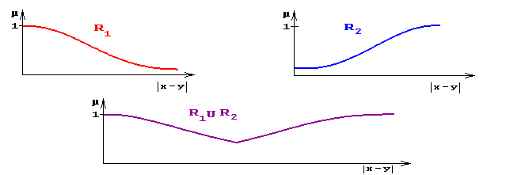
где a - такое |y-x|, что mR1(x,y) = mR2(x,y)
mR1ÈR2(x,y) = ì
í
îmR1(x,y), | y - x | £a
mR2(x,y), | y - x | >a2.
R1 y1 y2 y3 x1 0,1 0 0,8 x2 1 0,7 0
R2 y1 y2 y3 x1 0,7 0,9 1 x2 0,3 0,4 0,5
R1ÈR2 y1 y2 y3 x1 0,7 0,9 1 x2 1 0,7 0,5 Пересечение двух отношений.
Пересечение двух отношений R1 и R2 обозначается R1ÇR2 и определяется выражением:
mR1ÇR2(x,y) = mR1(x,y)Ù mR2(x,y) .Примеры:
1. Ниже изображены отношения: xR1y, означающее "модуль разности |y-x| близок к a", xR2y, означающее "модуль разности |y-x| близок к b", и их пересечение.
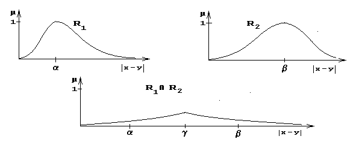Алгебраическое произведение двух отношений.
Алгебраическое произведение двух отношений R1 и R2 обозначается R1×R2 и определяется выражением:
mR1×R2(x,y) = mR1(x,y)× mR2(x,y) Алгебраическая сумма двух отношений.
Алгебраическая сумма двух отношений R1 и R2 обозначается R1R2 и определяется выражением: 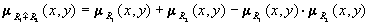.
Для введенных операций справедливы следующие свойства дистрибутивности:
R1Ç(R2ÈR3) = (R1ÇR2 )È(R1ÇR3),
R1È(R2ÇR3) = (R1ÈR2)Ç(R1ÈR3),
R1×(R2ÈR3) = (R1×R2)È(R1×R3),
R1×(R2ÇR3) = (R1×R2)Ç(R1×R3),
R1(R2ÈR3) = (R1R2)È(R1R3),
R1(R2ÇR3) = (R1R2)Ç (R1R3).
Дополнение отношения.
Дополнение отношения R обозначается и определяется функцией принадлежности:
(x,y) = 1 - mR(x,y) .Дизъюнктивная сумма двух отношений.
Дизъюнктивная сумма двух отношений R1 и R2 обозначается RÅR и определяется выражением:
R1ÅR2 = (R1Ç2)È(1ÇR2) .Обычное отношение, ближайшее к нечеткому.
Пусть R - нечеткое отношение с функцией принадлежности mR(x,y). Обычное отношение, ближайшее к нечеткому, обозначается R и определяется выражением:
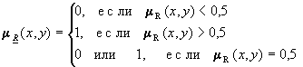
По договоренности принимают mR(x,y)=0 при mR(x,y) = 0,5.
Проекции нечеткого отношения.
Пусть R - нечеткое отношение R: (x,y)®[0,1]. Первой проекцией 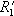 отношения R (проекция на X) называется нечеткое множество , заданное на множестве X, с функцией принадлежности:
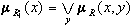. Аналогично, второй проекцией (проекцией на Y) называется нечеткое множество , заданное на множестве Y, с функцией принадлежности:
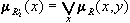. Величина h(R) = 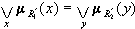 называется глобальной проекцией отношения R. Если h(R)=1, то отношение R нормально, в противном случае - субнормально.Пример:
R =
y1 y2 y3 y4 y5 x1 0,1 0,2 1 0,3 0,9 x2 0,9 0,1 0,5 0,8 0,5 x3 0,4 0 0,6 1 0,3 1-я проекция
1 0,9 1 = R1' R2' =
0,9 0,2 1 1 0,9
1 = h(R) 2-я проекция Цилиндрические продолжения проекций нечеткого отношения
Проекции R1¢ и R2¢ нечеткого отношения XRY в свою очередь определяют в X´Y нечеткие отношения и с функциями принадлежности:
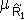(x,y)=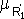(x) при любом y, 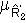(x,y)=(y) при любом x, называемые, соответственно, цилиндрическим продолжением R1' и цилиндрическим продолжением R2'.
Замечание. Очевидно, что для любых нечетких подмножеств А и В, определенных, соответственно, на X и Y, можно построить их цилиндрические продолжения А и В.
Пример (продолжение):Имеем:
R1' =
x1 1 x2 0,9 x3 1 =
y1 y2 y3 y4 y5 x1 1 1 1 1 1 x2 0,9 0,9 0,9 0,9 0,9 x3 1 1 1 1 1 и
R2' =
y1 y2 y3 y4 y5 0,9 0,2 1 1 0,9 =
x1 0,9 0,2 1 1 0,9 x2 0,9 0,2 1 1 0,9 x3 0,9 0,2 1 1 0,9 Сепарабельность отношений
Нечеткое отношение XRY называется сепарабeльным, если оно равно пересечению цилиндрических продолжений своих проекций, т.е. если R = Ç , т.е. mR (x,y) = (x)Ç (y).
Замечание. Если определено декартово произведение нечетких множеств (выше оно введено), то, очевидно, нечеткое отношение XRY сепарабельно, если оно является декартовым произведением своих проекций, т.е. R = R1'´R2'.
Пример (продолжение):
т.е. исходное отношение R несепарабельно.
Ç =
y1 y2 y3 y4 y5 x1 0,9 0,2 1 1 0,9 x2 0,9 0,2 0,9 0,9 0,9 x3 0,9 0,2 1 1 0,9 ¹ R,
|
|
Нечеткие множества в системах управления | В.Я. Пивкин, Е.П. Бакулин, Д.И. Кореньков |